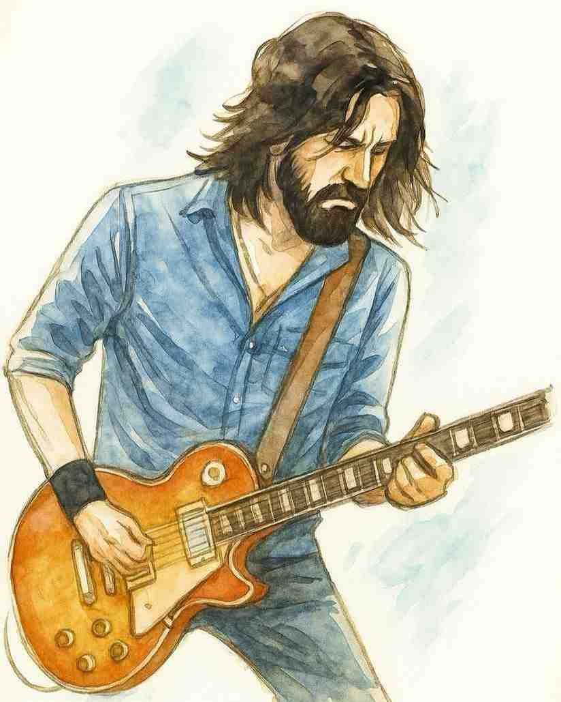
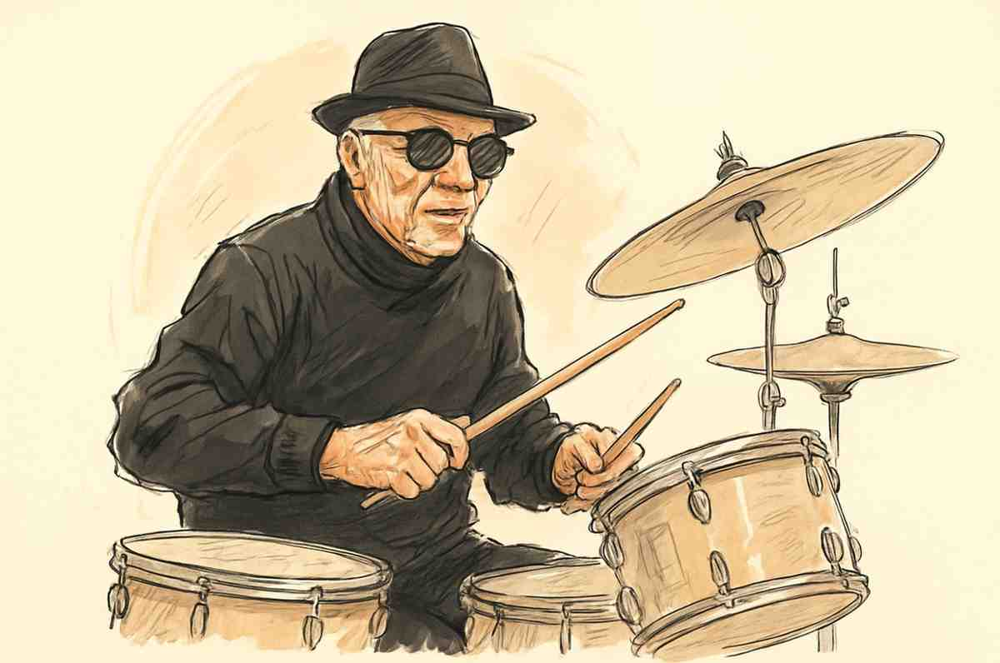

| Photo | Name | Role | Bio |
|---|---|---|---|
| Jack Raines | Lead Vocalist | Jack brings a soulful, smoky voice shaped by decades of jazz and rock performance. With roots in Chicago's vibrant music scene, he fuses crooner warmth with rock edge, delivering emotional, high-energy performances that make each show unforgettable. Jack's charismatic stage presence anchors the band's dynamic live experience. | |
|  | Victor "Vic" Marin | Guitarist | Vic is a seasoned guitarist known for his fluid transitions between smooth jazz licks and gritty rock riffs. A New Orleans native, his playing blends technical mastery with heartfelt improvisation. Vic’s decades of touring experience make him the sonic architect of the group’s rich, layered sound. |
| Lena Cruz | Bassist | Lena brings groove and grit with her bass lines, balancing precision with deep rhythm. Originally from Austin, Texas, she’s played with both underground jazz collectives and rock bands, earning a reputation as a powerhouse performer. Her stage energy and rhythmic foundation keep the band locked in and lively. | |
|  | Martin "Marty" Lowell | Drummer | Marty is the rhythmic backbone of the band, laying down tight, tasteful grooves that move effortlessly between swing, funk, and rock. With a background in session drumming and film scores, Marty is a master of dynamics and timing, giving the band its driving pulse and musical versatility. |